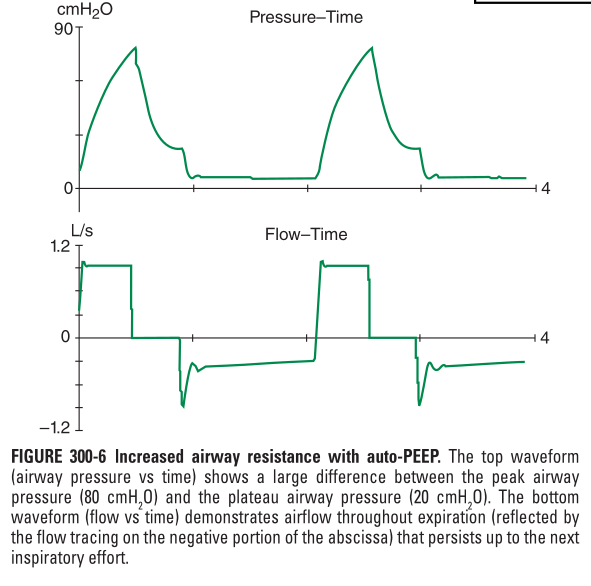

| Calculation of SOFA Score | |||||
|---|---|---|---|---|---|
| System | Score | ||||
| 0 | 1 | 2 | 3 | 4 | |
| Respiration (PaO2 / FiO2) | >= 400 | <400 | <300 | <200 with respiratory support | <100 with respiratory support |
| Coagulation (plt) | >= 150 | <150 | <100 | <50 | <20 |
| Liver (bilirubin, mg/dl) | <1,2 | 1,2 - 1,9 | 2,0 - 5,9 | 6,0 - 11,9 | >12,0 |
| Cardiovascular | MAP >= 70 | MAP < 70 | Dopamin <5 or dobutamine any dose | Dopamine 5,1 - 15 or epinefrin <= 0,1 or Norepinefrin <=0,1 | Dopamin >15 or epinefrin >0,1 or Norepinefrin >0,1 |
| CNS (GCS) | 15 | 13-14 | 2023-12-10 | 2023-09-06 | <6 |
| Renal (Creatinin mg/dl or urine output ml/day) | 1.2 | 1,2 - 1,9 | 2,0 - 3,4 | 3,5 - 4,9 (<500 cc) | >5,0 (< 200 cc) |
2 Emergency & Intensive Care Medicine
2.1 Approach to Critical Ill Patients
Assesment of illness severity
Important for:
resource allocation
Hospital administrative policies
asses quality of care
Two most commonly used scoring systems:
SOFA (Sequential Organ Failure Assessment)
APACHE (Acute Physiology and Chronic Health Evaluation)
SOFA Score
Includes 6 organ systems, with each graded 0 to 4 according to the degree of dysfunction. Increased score correlate with mortality and can be evaluated repeatedly (Loscalzo et al. 2022).
A derivation, the qSOFA or quick SOFA intented to screen patients for srisk of poor outcomes from sepsis. It is not intended for sepsis diagnostic screening tool, but in it often used as such in resources poor area. qSOFA used for bedside evaluation that may identify patient with suspected infection who are at greater risk for a poor outcome outside the ICU. The score range from 0 to 3 points in each three category including blood preasure, respiratory rate and mental status. Poor outcimes predicted if there at least 2 clinical criteria: (1) respiratory rate \(\geq\) 22/min, altered mental status, or systolic BP \(\le\) 100 mmhg.
APACAHE Score
SLightly more complicated than SOFA Score. (updated later)
2.1.1 Shock
2.1.2 Initial Evaluation
shock is a multisystem end-organ hypoperfusion. The resulting hypoperfusion followed by tissue hypoxia with accompanying lactic acidosis. Clinical Indicator:
- Reduced MAP
- Tachycardia
- Tachypnea
- Cool Skin and Extremities
- Acute Altered mental Status
- Oliguria
Reduced MAP could be the product of decreased cardiac output and/or systemic vascular resistance (SVR). Thus every shock patients should be evaluated for adequacy of cardiac output. Sign of diminished cardiac output includes (Cold Shock):
- A narrow pulse preassure (SBP - DBP), marker of stroke volume
- Cool extremities and delayed capillary refill time (COLD SHOCK). Palpate proximal extremities (eg Thigh) rather than distal extremities to determine relative “coolness” as peripheral artery disease may always have cool distal extremities.
Contrary, there are sign of increased cardiac output (Warm Shock), that may results from decreased SVR:
- A widened pulse pressure (particularly reduced DBP)
- Warm extremities with bounding pulse,
- Rapid capillary refill time
If reduced cardiac output found, then conduct assesment of volume status.
- History suggesting fluid loss or hemmorhage
- Reduced JVP
- Straight leg raise or fluid challange
- USG Marker: inferior vena cava collapse, left ventricular stroke volume
reduced cardiac function with increased intravascular volume - S3 or S4 gallop - JVP increased - Extremity Edema - Crackles on lung auscultation - Chest Xray show cardiomegaly, widening vascular pedicle, kerley B lines, pulmonary edema. - ECG: ischemic with or withour chest pain.
If sign of increased cardiac output found, conduct search for cause of reduced SVR.
- Sepsis
- Liver Failure
- Severe Pancreatitis
- Adrenal Insufficiency
- Burns
- Trauma
- Anaphylaxis
- Thyrotoxicosis
- Peripheral AV shunts
The need for arterial line and CVC - if shock prolonged and doest resolve with proper fluid resuscitation and vasoactive agent.
Initial evaluation followed with early aggresive targeted resuscitation improve survival. If initial bedside evaluation yield confounding data, objective assesment with USG/Echo needed (look Figure 2.1).
The need for Mechanical Ventilation
Always asses the ability of a patient to protect his or her airway and to maintain adequate gas exhange. Early intubation or mechanical ventilation often required for two main reasons:
- Acute hypoxemic respiratory failure.
It may occurs in cardiogenic shock and pulmonary edema, septic shock with pneumonia or acute respiratory distress syndrome (ARDS).
- Ventilatory failure
Often occurs as a consquence of an increased load on the respiratory system in the form of acute metabolic acidosis or decreased lung compliance.
Also in shock, a large percentage of CO need for respiratory muscle (10 folds), lactic acid production from inefficient respiratory muscle activity presents an additional ventilatory load. Ventilatory supports relieve work of breathing and allow redistribution of limited CO to other vital organ.
Sign of respiratory distress:
- inability to speak full sentences,
- accessory muscle activity
- paradoxical abdominal muscle activity
- extreme tachypnea (>40 breath/min)
After intubation and mechanical ventilation, declines in MAP frequently seen. The reasons:
- Impended Venous Return from positive pressure ventilation (PPV)
- reduced endogenous catecholamine secretion once stress associated with respiratory failures abates
- Actions of drugs used in endotracheal intubation.
- Right heart failure patients or preexisting pulmonary hypertension, due to increased right ventricula afterload due to PPV.
Many patients may be fluid responsive. Therefore, fluid administration and vasopressor support might needed before intubation.
2.1.3 Respiratory Failure
Respiratory failure mechanistically on the basis of pathophysiology can be categorized onto:
Type 1: Acute Hypoxemic Respiratory Failure
It occurs due to alveolar flooding, subsquent Ventilation-perfusion (VP) mismatch and intrapulmonary shunt physiology.
Alveolar flooding occurs due:
- pulmonary edema, pulmonary edema further caused by:
- elevated pulmonary microvascular pressures (heart failure or fluid overload) or
- ARDS (low pressure pulmonary edema), defined as: acute onset (\(\le\) 1 week) of bilateral opacities on chest imaging that are not fully explained by cardiac failure or fluid overload and ventilation perfusion mismatch, and shunt physiology that require positive end-expiratory pressure (PEEP)
- lung injury
- pneumonia
- alveolar hemorrhage
Type 1 RF occurs in sepsis, gastric aspiration, pneumonia, covid-19, near drowning, multiple blood transfusion & pancreatitis.
General Treatment
Mechanical ventilation. Mechanical ventilation with high tidal volume (12 ml/kg ideal body weight) traditionally further injured the lung due to repeated alveoli overdistention and stretching. This is called ventilator induced volutrauma and even induce ARDS in patients without ARDS initialy. many studies point toward low tidal volume (6 ml/kg ideal body weight) improve survival.
reproduce Figure of Preassure volume relathionsip!!!
Prone positioning
Low CVP or low PCWP or fluid conservatice approach fluid conservative management to maintain low CVP or PCWP associated with fewer days with mechanical ventilation than fluid liberal approach in patients that who have been resuscitated from shock.
Type 2 Respiratory Failure: Hypercapnic Respiratory Failure
It is a consequence of alveolar hypoventilation and the results from inability to eliminate CO2 effectively. The cause categorized into:
impaired CNS drive to breathe (“wont breathe”) Cause: drug overdose, brainstem injury, sleep-disordered breathing, severe hypothyroidism
reduced strength or impaired neuromuscular function in respiratory systems (“cant breathe”) cause: impaired neuromuscular transmission (eg. myasthenia gravis, Guillain-Barre syndrome, amyotrophic lateral sclerosis) or respiratory muscle weakness (eg. myopathy, electrolye problem, fatigue)
increased load on respiratory system (“cant breathe”) cause:
increased resistive load eg. brochospasm
reduced lung compliance eg. alveolar edema, atelectasis, intrinsip PEEP
reduced chest wall compliance eg. pneumothorax, pleural effusion, abdominal distention
increased minute ventilation requirements eg. pulmoanry embolus with increased dead space fraction, sepsis
general Treatment
Principal: reversing the underlying cause(s). Non-invasive ventilation (NIV) with positive pressure ventilation with tight fitting mask or nasal mask (avoidance of intubation) may stabilize these patients. It tested extensively in exacerbation of COPD. Contraindication for NIV include hemodynamic instability, inability to protect airway, respiratory arrests, significant airway secretions, significant aspiration risk.
Type 3 Respiratory Failure: Lung Atelectasis
The primary cause is lung atelectasis. It is common in perioperaticve period, this form is also called perioperative respiratory failure. Post general anesthesia, there are decrease in functional residual capacity lead to collapse of dependent lung units.
general treatment
treatment include: frequent positional changes, chest physiotherapy, upright positioning, control of incisional/or abdominal pain.
Type 4 Respiratory Failure: Metabolic Demands
Most often due to hypoperfusion of respiratory muscles in patients in shock. Normally, respiratory muscle consume < 5% total cardiac outpur (CO) and oxygen delivery. Patients in shock oftern experience respiratory distress due to pulmonary edema (eg. in cardiogenic shock), lactic acidosis and anemia. In these conditions, up to 40% CO distributed to respiratory muscle.
General Treatment
Endotrachea intubation & mechanical ventilation allow blood redistributed to vital organ and reverse the underlying cause.
Mechanical Ventilation
mechanical ventialtion is used to assist or replace sponstaneus breathung. Its application of high oxygen content + positive pressure. Primary indication is acute respiratory failure which there are two basic types: 1. hypoxemic and 2. hypercarbic. Hypoexemic present when arterial O2 saturation <90% despite increased inspired O2 fraction due to ventilation perfusion mismatch or shunting. Hypercarbic characterized by elevated arterial CO2 (usually >50 mmHg) resulting from conditions that decrease minute ventilation or increased physiologic dead space.
Types of Mechanical Ventilation
there are two types of MV: noninvasive ventilation (NIV) and invasive (conventional MV)
Noninvasive ventilation
NIV: effective in acute and chronic respiratory failure with fewer complication (pneumonia & tracheolaringeal trauma). NIV provided by tight fitting mask, a nasal mask similar to taht used for sleep apnea. It is especially effective in COPD. Modes used are bilevel positive airway pressure (BiPAP) or pressure support ventilation (PSV). Both used positive pressure during inspiration and expiration, althouhg lower in expiration. Trial showed: COPD exacerbation ph 7,25 - 7,35 associated with good outcomes, for ph <7,25 the failure increase with decreasing ph. patient with ph >7,35 NIV is not better than conventional treatment (controlled O2, systemic glucocorticoid, bronchodilator and antibiotics).
THe used of NIV in other respiratory failure is limited, and in some conditions contraindicated (cardiac arrest, respiratory arrest, decreased consciousness, GI bleeding, hemodynamic instability, MI, facial trauma, upper airway obstruction, inability to clear secretion), and may delay life saving measure. Reduced respiratory rate, decreased the use of accesory muscle (scalene, sternomastoid and intercostal) are good clinical indicator of improvement. ABG should be evaluated hours after NIV initiation, if no improvement it may need a conventional MV
Invasive Ventilation (Conventional MV)
Intubation (cuffed tibed inserted to trachea) to allow conditioned (warmed, oxygenated, humidified) gas delivered to the airways.
Principles of MV: optimize oxygenation while avoiding ventilator-induced lung injury due to overstretch and collapse/re-recruitment (protective ventilatory strategy)
Modes of Ventilation
modes are the manner in which breaths are triggered, cycled and limited. - trigger: inspiratory effort or time based signal - cycle : refers to the factors that determine the end of inspiration (volume, pressure and time cycling) - limiting factors are operator-specified values: airway pressure.
Most patient ventilated with assist-control, intermittent mandatory ventilation, PSV.
Assist control ventilation
Assist control (ACMV) is the most widely used. Used in initiation of MV. trigger: initiated by patient inspiratory effort, if none detected, by specified time signal. cycle: pressure or volume cycle. limit: specified tidal-volume, RR defined by patients rate or backup rate.
problem: auto-peep might occurs if dynamic hyperinflation due to high RR happens.
Intermittent Mandatory Ventilation
Most commmon modes: SIMV trigger: set mandatory breath, between each mandatory breath patient can breath spontaneously. in SIMV, mandatory breath delivered in syncrony with patients breath.if patient fail to initiate a breath, the machine give fixed volume and reset its timer for next breath. cycle: defined volume, limit:
difference with ACMV: only the a preset number of breath are ventilator-assisted. SIMV allowd patients with intact respiratory drive to exercise inspiratory msucles between assisted breath, useful for supporting and weaning intubation. problem: difficult to use in tacypnea, due to expiration attemp during ventilator inspiratory cycle. The pressure increase, and may abort the inspiration and thus lower tidal volume. In contrast, for tachypnea represent of metabocl or respiratory acidosis, change in ACMV will increase minute ventilation and help normalize pH
Pressure-support Ventilation
trigger: patient breath cycle: flow, isnpiration is terminated when airflow fall below a certain level. limit: pressure
provides graded asistence and differs from the other two in that the operator set the pressure level to augment every spontaneous breath. The level of pressure is adjusted by observing the patiens RR.
Pressure-Control Ventilation (PCV)
useful to limit peak pressure, in patients with preexisting barotreauma or post htoracic surgery.
trigger: time cycle: time, limit: pressure
minute ventilation is altered through RR and pressure control.
Continous Positive Airway Pressure (CPAP)
All ventilation occurs through the patients spontaneus efforts. The machine provide fresh gas to the circuit and set constant pressure.
Protective Ventilatory Strategy
Whatever the modes of MV, the principles:
- Set target tidal volume close to 6 ml/kg of ideal body weight
- Prevent plateu pressure exceed 30 cm H2O
- Use the lowest possible FIO2 to keep SaO2 \(\ge\) 90%
- Adjust the PEEP to maintain alveolar patency while preventing overdistention and closure/reopening.
Maintenance for mechanical Ventilated patients
Respiratory System Mechanics
Peak airway pressure dtermined by two variable: airway resistance and respiratory system compliance. At the end of inspiration, there are transient pause of inspiratory flow, the pressure called plateu pressure. Plateu pressure determined by respiratory system compliance. During volume controlled ventilation, the difference peak airway pressure (airway + respiratory system) and plateu pressure (respiratory system) provides a quantitative assesment of airway resistance. Patients with increased airway resistence typically have increased peak airway pressures and abnormally high gradients between peak and plateu airway pressure (> 10 - 15 cmH2O) at a constant inspiratory flow rate of 1 L/s(shown in figure Figure 2.2. Normally, respiratory system compliance is ~ 100 ml/cmH2O, divided by the lungs and chest wall. Pathophysiologic process decrease wall compliance such as pleural effusion, pneumothorax & increase abdominal girth. Lung compliance decreased by pneumonia, pulmonary edema, alveolar hemorrhae, interstitial lung disease, or auto PEEP. Auto-PEEP occurs when there is insufficient time for emptying of alveoli before the next inspiratory cycle, thus alveoli failed to decompress fully and remains positive pressure at all phase of respiration. Theis phenomenon results most commonly from obstruction of distal airways such as Asthma or COPD.

Patients frequently require sedatives & analgetics.
Analgesics
Opieates is the mainstay of mechanicaly ventilated patients
Sedatives
After pain adequately controlled, sedation needed for anxiolysis, treatment of subjective dyspnea, reduction of autonomic hyperactiviy, reduction of total O2 consumption. Nonbenzodiazepin are preffered because benzodiazepin associated with increased delirium and worse patients outcome.
Amnesia could be achieved with propofol or benzodiazepine such lorazepam or midazolam.
Neuromuscular Blocking Agents
Patients with ventilatory dyssyncrony despite optimal sedation may needed paralytics agents. Wathout for prolonged weakness, a myopathy known as the postparalytics syndrome. Thus, neuromuscular blocking is the last agent, only in patients which fail to achieve ventilator syncrony with aggresive sedation. Remember, neuromuscular blocking agent do not results in pharmacological paralysis without altering mental status, thus sedative is almost always required for amnesia.
Ventilator Weaning and Extubation
Recognition of patients readyness to be liberated from mechanical ventilation is important. Screening conducted daily, criteria:
- Stable oxygenation (Pao2 / Fio2 > 200 and PEEP \(\le\) 5 cm H2O)
- Cough and Airway Reflexes Intact
- No Vasopressor administered
- No Sedatives adminsitered
if all requirement passed, patient should undergi a spontaneous breathing trial (SBT), if sedative still administered, patients could also undergo spontaneous awakening trial (SAT.
SAT/SBT trial consist of a period of breathing through endotracheal tube with little or without ventilator support (CPAP 1-5 cmH2O with or without low-level pressure support (PSV) and open T-piece breahing system) for 30 - 120 minutes. SBT Failure or should be stopped if:
- RR >35 min for >5 min
- O2 saturation <90%
- HR > 140x/min or a 20% increase or decrease from baseline
- SBP <90 mmHg or >180 mmHg
- Increased anxiety or diaphoresis
if none of these events occured, patients should considered for an extubation trial. Despite these carefull criteria, 10% patients develop respiratory distress after extubation and may require resumption of mechanical ventilation and reintubation.
Once patients determined that able to breath spontaneously, then proceeed to remove the artificial airway which should be undertaken only when it is patients showed the ability to protect airway, able to cough and clear secretions, alert enough to follow commands. If reintubation is deemed difficult if required, evaluation with cuff-leak test is supported by evidence. If possibility of post-extubation stridor, administration of systemic steoroid should be given.
Prolonged MV and Tracheostomy
5-13 % patients with MV will go on to require prolonged MV (>21 days). It is important to decide whether and when to perform a trachoestomy. Tracheostomy is though to be more comfortable, require less sedation, and provide a more secure airway and reduce weaning time.
In general, if a need of MV for >10-14 days, a tracheostomy would be indicated.
Maintenance for mechanical Ventilated patients
Respiratory System Mechanics
Peak airway pressure dtermined by two variable: airway resistance and respiratory system compliance. At the end of inspiration, there are transient pause of inspiratory flow, the pressure called plateu pressure. Plateu pressure determined by respiratory system compliance. During volume controlled ventilation, the difference peak airway pressure (airway + respiratory system) and plateu pressure (respiratory system) provides a quantitative assesment of airway resistance. Patients with increased airway resistence typically have increased peak airway pressures and abnormally high gradients between peak and plateu airway pressure (> 10 - 15 cmH2O) at a constant inspiratory flow rate of 1 L/s(shown in figure Figure 2.2. Normally, respiratory system compliance is ~ 100 ml/cmH2O, divided by the lungs and chest wall. Pathophysiologic process decrease wall compliance such as pleural effusion, pneumothorax & increase abdominal girth. Lung compliance decreased by pneumonia, pulmonary edema, alveolar hemorrhae, interstitial lung disease, or auto PEEP. Auto-PEEP occurs when there is insufficient time for emptying of alveoli before the next inspiratory cycle, thus alveoli failed to decompress fully and remains positive pressure at all phase of respiration. Theis phenomenon results most commonly from obstruction of distal airways such as Asthma or COPD.
Patients frequently require sedatives & analgetics.
Analgesics
Opieates is the mainstay of mechanicaly ventilated patients
Sedatives
After pain adequately controlled, sedation needed for anxiolysis, treatment of subjective dyspnea, reduction of autonomic hyperactiviy, reduction of total O2 consumption. Nonbenzodiazepin are preffered because benzodiazepin associated with increased delirium and worse patients outcome.
Amnesia could be achieved with propofol or benzodiazepine such lorazepam or midazolam.
Neuromuscular Blocking Agents
Patients with ventilatory dyssyncrony despite optimal sedation may needed paralytics agents. Wathout for prolonged weakness, a myopathy known as the postparalytics syndrome. Thus, neuromuscular blocking is the last agent, only in patients which fail to achieve ventilator syncrony with aggresive sedation. Remember, neuromuscular blocking agent do not results in pharmacological paralysis without altering mental status, thus sedative is almost always required for amnesia.
Ventilator Weaning and Extubation
Recognition of patients readyness to be liberated from mechanical ventilation is important. Screening conducted daily, criteria:
- Stable oxygenation (Pao2 / Fio2 > 200 and PEEP \(\le\) 5 cm H2O)
- Cough and Airway Reflexes Intact
- No Vasopressor administered
- No Sedatives adminsitered
if all requirement passed, patient should undergi a spontaneous breathing trial (SBT), if sedative still administered, patients could also undergo spontaneous awakening trial (SAT.
SAT/SBT trial consist of a period of breathing throung endotracheal tube without ventilator support (CPAP 5 cmH2O with or without low-level pressure support and open T-piece breahing system) for 30 - 120 minutes. SBT Failure or should be stopped if:
- RR >35 min for >5 min
- O2 saturation <90%
- HR > 140x/min or a 20% increase or decrease from baseline
- SBP <90 mmHg or >180 mmHg
- Increased anxiety or diaphoresis
if none of these events occured, patients should considered for an extubation trial. Despite these carefull criteria, 10% patients develop respiratory distress after extubation and may require resumption of mechanical ventilation and reintubation.
2.1.4 Multiorgan system failure
Multiorgan system failure, defined by the simultaneous presence of physiologic dysfunction and/or failure of two or more organs. Organ failure, no matter how it is defined must persist beyond 24 hours.
2.2 Specific Critical illness
2.2.1 Acute Respiratory Distress Syndrome (ARDS)
ARDS is clinical syndrome of severe dyspnea of rapid onset, hypoxemia, and diffuse pulmonary infiltrates leading to respiratory failures.
2.2.2 Diagnostic Criteria for ARDS
| Severity (PaO2/FiO2) | Onset | Chest Radiograph | Absence of Left Atrial Hypertension |
|---|---|---|---|
| mild: 200 mmHg< X <=300 mmHg; moderate: 100 mmHg < X <=200 mmHg; Severe: <= 100 mmHg | Acute: within 1 week of clinical insult or new, or worsening respiratory symptoms | Bilateral opacities consistent with pulmonary edema not fully explained by effusion, lobat/lung collapse, or nodules | Hydrostatic edema is not the primary cause of Respiratory Failure |
ddx: - cardiogenic pulmonary edema - bilateral pneumonia - alveolar hemorrhage
2.2.3 Epidemiology
Estimated incidence: 60/100.000 population.
Etiology
ARDS can be caused by diffuse lung injury from many medical and surgical disorders. It may be direct (on the lung) or indirect (extrapulmoner including thoracic structure). The most case (>80%) are caused by pneumonia and sepsis. Then, gastric aspiration, trauma, multiple transfusiion, pancreatitis, and drug overdose. Traumatic cause include pulmonary contusion, multiple bone fractures, chest trauma/flail chest. The risk increase with predisposing medical condition.
Pathophysiology
Natural history of ARDS divided into 3 phases - exudative, proliferative, and fibrotic.
Exudative Phase
This phase encompases the first 7 days after precipitating ARDS risk factor. The alveolar capillary endhotelial cells and type 1 pneumocytes injured, loss of tight alveolar barrier to fluid and macromolecules. Edema fluid contain protein accumulates in the interstitial and alveolar spaces. Proinflamatory cytokines increase followed by leukocytes recruitment. The leaked plasma condensed and agrreagte in the air spaces + cellular debris + dysfunctional surfactant to form hyaline membran whorls.
Alveolar edema predominantly involves dependent portions of the lung with diminished aeration. Large lung dimineshed aeration cause increase in lung compliance. Alteration in alveolar spaces are exacerbated by microvascular occlusion leading to reduced perfusion and pulmonary hypertension. it also cause intrapulmonary shunting and hypoxemia, leading to dyspnea.
sign: - dyspnea, may leads to respiratory fatigue - chest radiograph reveals opacities resembling pulmonary edema. distinguishing featues from cardiogenic pulmonary edema are no cardiomegaly, no pleural effusin, or no pulmonary vascular redistribution. - laboratory finding indicative of the underlying disoder.
Proliferative Phase
phase day 7 to 21. May showed an improvement, including weaning of mechanical ventilation. It may shows some degree of lung repair, reduced alveolar exudates, and shift to lymphocytes predominant infiltrat, increased surfactant.
sign: - improvement in symtoms, but still dyspnea - tachypnea - hypoxemia
Fibrotic Phase
Phase 3-4 weeks after lung injury. Many patients may recover, but some enter a fibrotic phase. The exudate convert to extensive alveolar duct and interstitial fibrosis. desctruction of acinar architecture leads to emphysema like changes (bullae), and may also develop microvascular occlusion and pulmonary hypertension.
Treatment
General Principles
Emphasize on treatment of the Critical ill
- treatment of underlying cause
- minimization of unnecessary procedures
- standardized bundle care
- promt recognition of nosocomial infections
- adequte nutrition
Mechanical Ventilation
Patient meeting criteria ARDS frequently become respiratory fatigues, so it requires mechanical ventilation.
Minimize ventilator induced lung injury
Mechanical ventilatio (MV) can save lifes, but also can aggravate lung injury due to volutrauma and atelectrauma. Volutrauma can occurs due to overdistention of alveoli due to effort to inflate the consolited lungs thus damaging the still functioning alveoli.
- Low tidal volume 6ml/kg predicted body weight are better than coenventional 12 ml/kg bodyweight.
- lower airway pressure, plateu pressure \(\le\) 30 cm H2O.
- RR \(\le\) 35
Minimize atelectrauma
In presence of fluid and loss of surfactant, PEEP is required to prevent atelectasis. PEEP is adjusted to minimize FIO2 while able to provide adequate PaO2 without causing alveolar overdistention. Follow table of PEEP-FiO2 combinations from ARDS Network trial.
other technique includes recruitment manuever, that transiently increase PEEP to high levels to recruit ateletatic lung can increase oxygenation, but a mortality benefit has not been established.
Prone positioning
It improves survival.
Fluid Management
increased pulmonary vascular permeability leading to interstitial and alveolar edema fluid rich in protein is a centra features of ARDS. impaired vascular integrity augments the normal increase in extravascular lung water. Thus keeping low left atrial filling pressure could minimize pulmonary edema. Fluid restriction and diuretics should be an important aspect of ARDS management, limited only by hypotension and hypoperfusion.
Neuromuscular blockage
Sedation alone may not adequate for ventilator syncrony. Selective use of neuromuscular blockage for ventilator syncrony could improves survival.
Glucocorticoids
Current evidence does not support the routine use of glucocorticoids.
Prognosis
extrapulmonary organ failures and sepsis counts > 80% of deaths. Risk factor for reduced survival are age (>60 yo), preexistin organ dysfunction. Patients who survives despite prolonged respiratory failures and dependent on MV may recover within 6 months.
2.2.4 Approach to Circulatory Shock
shock is the clinical condition of organ dysfuntion resulting from imbalance between celular oxygen supply and demand. Shock is reversible in early state, but if left untreated leads to multisystem organ dysfunction and death.
Pathophysiology of Shock
The cellular oxygen imbalance most commonly related to impaired oxygen delivery in the setting circulatory failure. - shock may also occurs in the setting of failure oxygen utilization (cyanide poisoning) - and state of increased oxygen demand.
In the setting of inadequate oxygen supply, the cell cannot maintain aerobic metabolism, thus forced into anaerobic metabolism and produce lactate and less ATP. Less ATP supply impaired cell ability to maintain hemeostasis such as maintaining N/K pump. Celular pump failure cause influx of calcium and leads to activation of phospolipases and protease, causing cellular swelling and death. In addition, hypoxia cause leakage of intracellular contents to the extracellular space, activating inflamatory cascasdes.
Oxygen delivery influenced by two major components, namely Cardiac Output (CO) and arterial oxygen content (CaO2.
DO2 = CO x CaO2, major determinants of CO are HR and SV
DO2 = (HR x SV) x CaO2, major determinants of SV are preload, afterload (SVR), and cardiac contractility. thus
SV ~ (Preload x Contractility)/SVR
Preload refees to myocardical fibers lenght before contraction (LV-EDV). Contractility refers to the ability of the ventricile to contract independent of preload and afterload. SVR represent afterload, force that ventricle must overcome to send the blood out of the cardiac cambers.
The CaO2 is composed of oxygen carried by convection with hemoglobin and oxygen dissolved in blood,
CaO2 = (Kg x 1,39 x SaO2) + (PaO2 x 0,03)
A disease process that affects these variables (HR, preload, contractility, SVR, SaO2, or Hb) has potential to reduce DO2.
Classification of Shock
Four major shock types are distributive, cardiogenic, hypovolemic, and obstrictive. Each has unique hemodynamics profile.
Distributive Shock
Distributive shock is condition of reduced O2 delivery where the primary physiologic distubance is reduction in SVR. There are increase of CO as a compensatory effort. CVP and PCWP reduced. The most common etiology is sepsis. Sepsis is life-threatening organ dysfunction due to dysregulated host response to infection. If accompanied by persistent hypotension despite adequate fluid resuscitation and needed vasopressor support, it is called septic shock. Other medical cause : Anaphylaxis (IgE mediated vasodilatation after exposure to allergen), pancreatitis, severe burns, liver failure. There almost 35% extravasation of circulating blood volume within 10 minutes. Patiens with severe brain or spinal cord injury may have a reduction in SVR due to disruption of autonomic pathways and blood pooling in venous system. Other cause is adrenal insuficiency due to chronic steroid use, medication , malignancy, adrenal hemmorhage, infection or autoimune. Acute stress condition, created deficit in steroid, and cause vasodilatation as well as aldosteron deficiency-mediated hypovolemia.
Cardiogenic Shock
Cardiogenic shock is characterized by reduced O2 delivery related to a reduction in CO owing to a primary cardiac problem. There are compensatory response as an increase in SVR. If left ventricle is dysfunction, there will be increased PCWP, and if right ventricle is will present as increased CVP. SV may reduced due to reduced contractility (MI, Cardiomyopathies, myocarditis), valvular disease, or due to alteration in HR (bradiaritmia and tachyarithmia)
Hypovolemic Shock
Hypovolemic shock encompasses disease that reduce CO and DO2 via a reduction in preload. There is elevation is SVR and low CVP-PCWP. Most common cause is hemmorhage followed by fluid loss from diarhea or vomiting, diuresis, skin damage.
Obstructive Shock
Obstructive shock is reduced O2 delivery related to reduced CO because impairment in blood flow, both inflow and outflow, in extracardiac pulmonary vascular or other mechanical process. Inflow obstruction Etiology: tension pneumothorax, cardiac tamponade, restrictive pericarditis. Outflow obstruction etiology: pulmonary embolism, venous air embolis, fat embolism or aortic dissection.
UGD => hypovolemic (30,8%) > septic (27,2%) > distributive non septic (23,4%) > cardiogenic (14%) >>>> obstructiove shock (0,9%). ICU => Shock predominates )62%) >> Hypovolemic (16%) ~ cardiogenic shock (15%) >>> obstructive shock (2%).
Mortality rate: cardiogenic ~ septic > hypovolemic
Stages of Shock
There are 3, preshock, shock and irreversible shock. Body utilize variety of physiologic response to counter initial insult. There no overt sign of organ dysfunction. Lab: slight elevation of creatine or troponin or mild elevation of lactate. If host compensatory mechanism are not enough, organ dysfuction occurs and irreversible Shock ensued.
Evaluation of the patient with Shock
early recongition is paramount important to reverse the stages of shock. Anamnesis to find the cause. Physical examination to identify circulatory failure (hypotension SBP <90 mmHG, or MAP < 65 mmHg) and sign of organ dysfunction. Check urine output. Finding: High CO shock: warm peripherals, CRT <2 S, large pulse pressure (LOW DBP). Low CO shock: delayed CRT, cool extremities, weak pulses.
Increased instravasular filling pressure and JVP (cardiogenic, obstrctive shock)
Shock Index : defined as the HR/SBP with normal SI 0,5 - 0,7
Lab test: - Lactate - Renal function - liver function - cardiac enzymes - CBC - Hemostatic index - UL - PP test if needed - ECG - CXR - POCUS (RUSH, ACES, SESAME protocol)
Initial Treatment of Shock
Initiate treatment for circulatory shock.
Find venous access and invasive monitoring if needed
Volume Resuscitation
The physiologic goal of volume resuscitation is to move the patient to the nonpreload-dependent portion of the Starling curve. Most patients with any of the four shock types will benefit from an increase in intra-vascular volume. suspected septic shock, a minimum of 30 mL/kg is recommended by the Surviving Sepsis Campaign. While the need for volume resuscitation is most apparent for patients with distributive or hypovolemic shock, even patients with cardiogenic shock may benefit from cautious volume replacement. In these patients, there should be a careful assessment of volume status prior to volume administration.
Volume resuscitation will begin with crystalloid. In patients with hypovolemic shock due to ongoing hemorrhage, volume replacement with packed red blood cells is warranted. In cases of massive transfusion, platelets and fresh frozen plasma should be provided to offset the dilution of these components during volume replacement. Because hemoglobin is a key determinant of CaCO2, red cell administration may be a part of volume replacement even without hemorrhage in order to optimize oxygen delivery if hemoglobin content is <7 g/dL.
Assessment of intravascular volume status (and the adequacy of volume resuscitation) begins with the physical examination. The passive leg raise (PLR) test can predict responsiveness to additional intravenous fluid (IVF) by providing the patient with an endogenous volume bolus. While the patient is resting in a semirecumbent position at a 45° angle, the bed is placed in Trendelenburg position such that the patient’s head becomes horizontal and the legs are extended at a 45° angle. There is then an immediate (within 1 min) assessment of changes in CO (or pulse pressure variation as a surrogate). It is important to emphasize that one does not merely look for changes in blood pressure; if the shock patient is mechanically ventilated there is the option of looking at changes in SV variation (or pulse pressure variation) during the respiratory cycle to assess volume responsiveness. A >12% SV variation suggests a volume-responsive state. This measurement requires that the patient be in a volume cycle mode of ventilation, without breath-to-breath variations in intrathoracic pressure and without arrhythmias.
There is also increased use of echocardiography to assist in determination of intravascular fluid status, with a variety of static and dynamic variables The most commonly used parameters to assess adequacy of volume resuscitation are inferior vena cava (IVC) diameter and IVC collapse. Alternatively, serial assessments of LV function can be performed while volume is being administered. Placement of a pulmonary artery catheter (PAC) is another tool for assessment of volume status. This more invasive measure involves placement of the PAC into the central venous circulation and through the right heart. Ports in the PAC (Swan-Ganz catheter) allow for direct measurement of CVP, pulmonary artery (PA), and PCWPs. The PCWP is used as a surrogate for LA pressure.
Vasopresor and Inotropic Support
If hypotension and inadequate tissue perfusion persist, then vasopressor and inotropic support should be initiated. The use of vasopressors and inotropes must be tailored to the primary physiologic disturbance.
In distributive shock, the aim is to increase the SVR. Norepinephrine is the first-choice vasopressor, with potent α1 and β1 adrenergic effects. The α1 causes vasoconstriction while β1 has positive inotropic and chronotropic effects. At high doses, epinephrine has a similar profile (at lower doses the β effects predominate) but is associated with tachyarrhythmia, myocardial ischemia, decreased splanchnic blood flow, pulmonary hypertension, and acidosis. In distributive shock, vasopressin deficiency may be present. Vasopressin acts on the vasopressin receptor to reverse vasodilation and redistribute flow to the splanchnic circulation. Dopamine does not have a role as a first-line agent in distributive shock.
For patients with cardiogenic shock, dobutamine is the first-line agent; it is a synthetic catecholamine with primarily β-mediated effects and minimal α adrenergic effects. The β1 effect is manifest in increased inotropy and the β2 effect leads to vasodilation with decreased afterload; it can be used with norepinephrine in patients with mixed distributive and cardiogenic shock.
Oxygenation and Ventilation Support
Supplemental oxygen should be initiated and titrated to maintain SpO2 of 92–95%. patients may require intuvation and MV for two reason:
primary pulmonary process or related to LV dysfunction and elevations of PCWP. For patients with all types of shock, there can be development of ARDS and subsequent V/Q mismatch and shunt.
high minute ventilatory needs to compensate for metabolic acidosis. As shock progresses, they may not be able to maintain adequate respiratory compensation.
It is important to provide ventilation with lung-protective strategies focused on low tidal volume ventilation and optimization of positive end-expiratory pressure to minimize ventilator-induced lung injury.
Antibiotics
For patients presenting with undifferentiated shock, if the diagnosis of septic shock is being entertained, then broad-spectrum antibiotics should be administered after obtaining appropriate cultures. While it is ideal to initiate antibiotics after appropriate cultures, the inability to obtain cultures should not delay the start of treatment
Other specific treatment for specific etiology
The initial evaluation (history, physical examination, and diagnostic testing) may have identified an etiology of shock that requires urgent lifesaving intervention in addition to the initial treatment steps out- lined above.
2.2.5 Sepsis
2.2.6 Cardiogenic Shock and Pulmonary edema
2.2.7 Cardiac Arrest
2.2.8 Neurological Critical illness
2.3 Important Calculation
2.3.1 Airway & Ventilation
2.3.2 Circulation
Oxygen Delivery
Oxygen delivery (DO2 or QO2) is a function of cardiac output and the content of O2 in the arterial blood (CaO2). CaO2 is determined by HB concenctration, arterial HB saturation, and dissolved O2 disolved in plasma (not bound to HB). Equation provided at Equation 2.1. Nearly all oxygen delivered to the tissue is bound to HB. Disolved O2 are negligible.
Arterial oxygen content (CaO2) normally around 21.16 mL/dL, while the mixed venous blood (VO2) is 15.76 mL/dL, thus normal tissue extraction is around 25%. Reduced VO2 may results from inadequate CO, reduced HB or reduced SaO2. Abnormally high VO2 may be caused by fever, agitation, shivering and thyrotoxicosis.
\[ QO~2~ = \text{Cardiac Output} \text{ (dL/min)} \times (1.39 \times \text{HB concentration} \times \text{HB% Saturation} + 0.0031 \times PaO2) \tag{2.1}\]
\[ QO~2~ = 50 \text{ dL/min} \times (1.39 \times 15 \text{g/dL} \times 100\% + 0.0031 \times 100) \] \[ QO~2~ = 50 \text{ dL/min} \times 21.6 \text{mL O2 per dL blood or CaO2} = 1058 \text{ mL O2 per min} \]